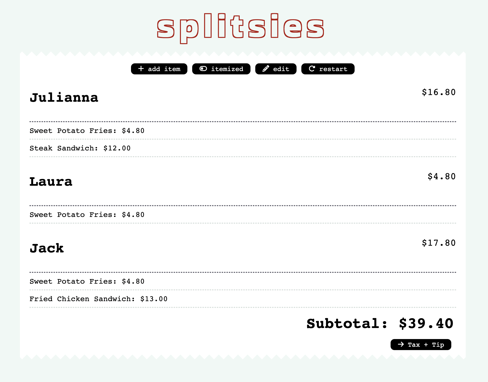
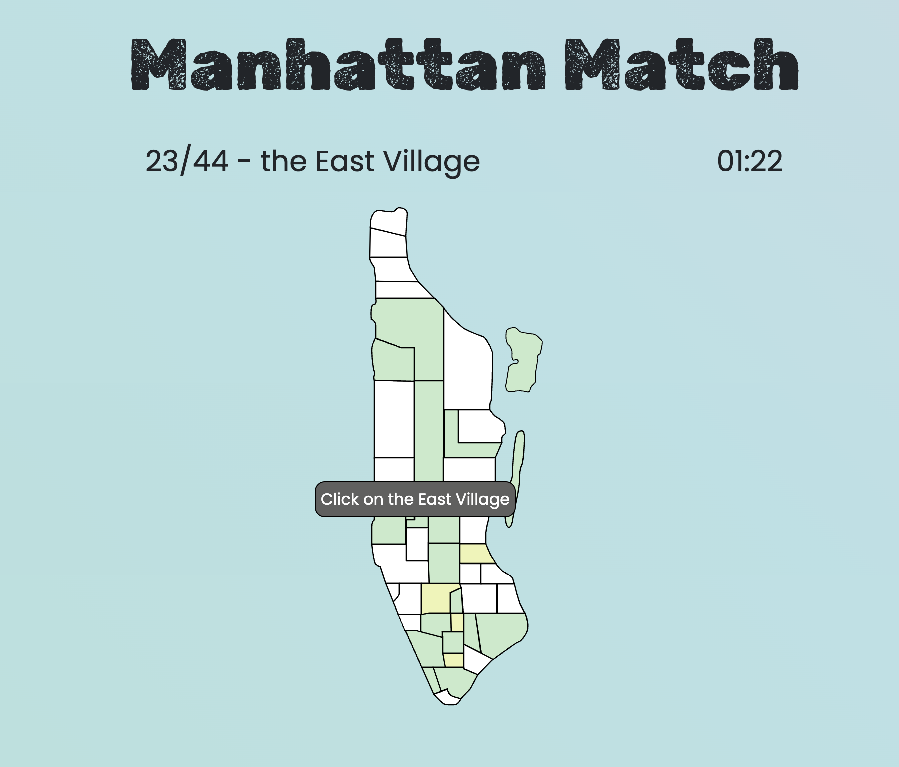
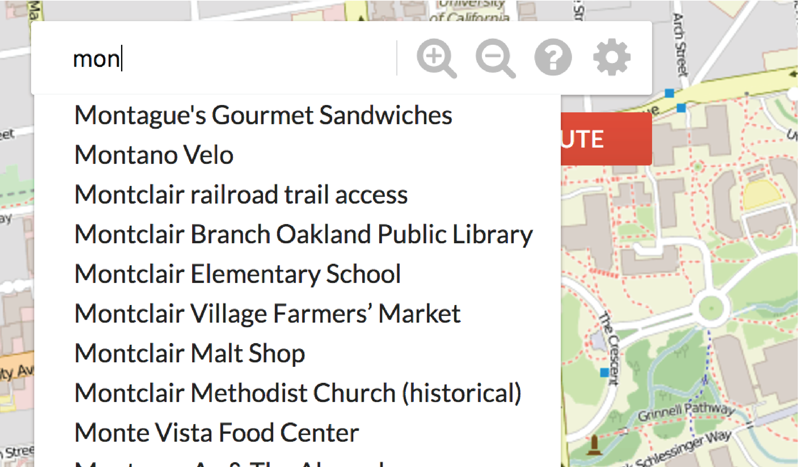
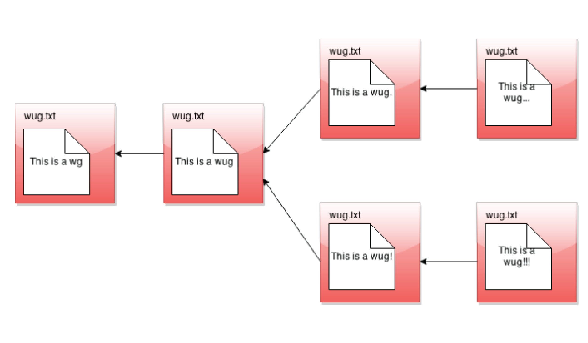
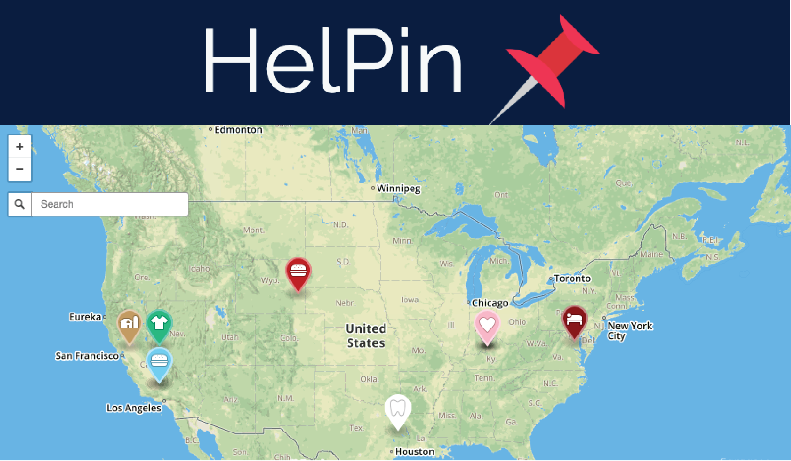

Projects

splitsies
As I’ve explored NY’s restaurant scene, I haven’t found an app that easily splits the bill - so I decided to make my own. Powered by React, splitsies is dedicated to fairly divying up expenses with friends. It’s still a work in progress, but I’ve really enjoyed both making and using it.
Check out splitsies or its Github
Check out splitsies or its Github
Manhattan Match
To help my friends and I become better acquianted with New York (we're almost all transplants), I created a matching game for Manhattan's neighborhoods.
Play Manhattan Match or visit its Github
Play Manhattan Match or visit its Github


Stage Block
Through prototypes, Figma mark-ups, and usability studies, my team developed Stage Block— a tool dedicated to helping playwrights visualize scenes. Users can create custom characters with lines and blocking for front and top-down views, and use the playback feature to see how the scene feels in action.
Bear Maps
I developed the backend of a maps web server, integrating tries for autocomplete and the A* algorithm for routing. Additionally, I implemented map rastering, turn-by-turn navigation, and location search functionalities while optimizing efficient runtime performance.


Gitlet
Gitlet, a version-control system mimicking some basic features of Git, enables users to save, restore, and view the history of backups for file collections, supporting functionalities like committing, checking out files, merging, branching, and viewing commit logs.
HelPin
Developed in a UC Davis Hackathon, HelPin is a web app designed to facilitate connections between individuals in need and those who can offer assistance. The platform allows users to drop location pins and provide details about the assistance required by individuals in need. Other users can then view these descriptions and extend help or supplies accordingly.
